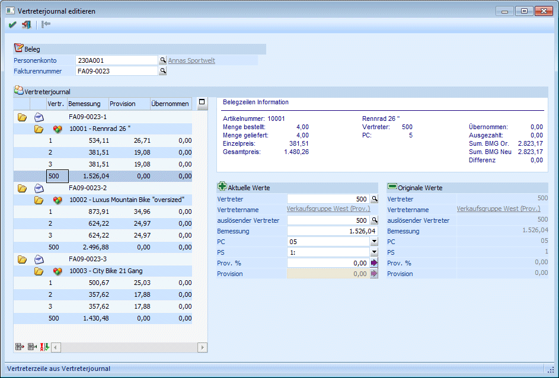
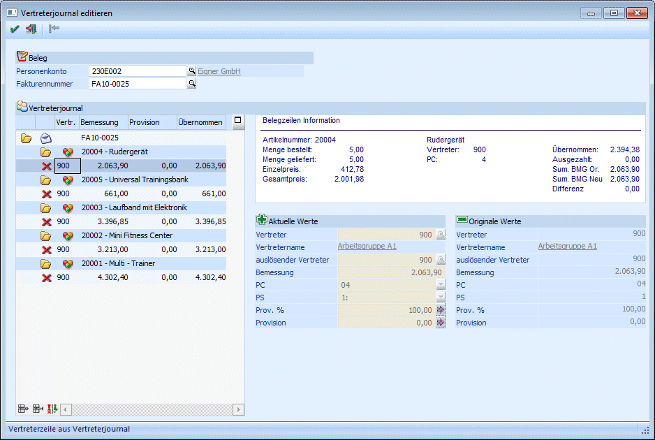
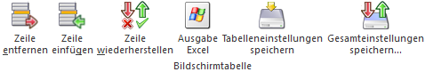
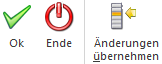

Im Menüpunkt "Vertreterjournal editieren", welches über…
1 WinLine FAKT
1 Auswertungen
1 Vertreterauswertungen
1 Vertreterjournal editieren
… aufgerufen werden kann, können erfasste Vertreterjournalzeilen (die direkt beim Belegerfassen geschrieben werden) bzw. Übernahmezeilen (aus der Provisionsübernahme) bearbeitet werden.
Hinweis
Bei Vertreterjournalzeilen ist zu beachten, dass diese nur editiert werden können sofern noch keine ausgezahlten Übernahmejournalzeilen dazu vorhanden sind. Sind ausgezahlte Übernahmejournalzeilen vorhanden wird der komplette offene Posten zur Bearbeitung gesperrt. Ebenso können Zeilen nicht mehr editiert werden, wenn diese aus einem nachträglichen Auflösen einer Vertretergruppe stammt.

Folgende Selektionen und Editiermöglichkeiten stehen zur Verfügung:
Faktura
Ø Personenkonto
Hier kann das gewünschte Personenkonto angegeben oder über den Matchcode gesucht werden.
Ø Fakturennummer
Angabe der Fakturennummer die bearbeitet werden soll. Zur Suche nach gewünschter Faktura kann der Matchcode verwendet werden.
Mit Bestätigung der Fakturennummer wird im linken Fensterbereich (Tabelle) die Faktura und je nach Einstellung in den FAKT-Parametern die Artikelzeilen, d.h. aus dem Vertreterjournal sowie aus dem Übernahmejournal angezeigt.
Diese werden nach OP-Nummer und innerhalb der OP-Nummer nach Artikelzeilen gruppiert in die Tabelle gestellt.
Zusätzlich werden verschiedene Informationen im so genannten Info-Bereich im rechten Teil des Fensters angezeigt.
Hinweis
Ist in den FAKT-Parametern die Option "Vertreterabrechnung auf Provisionscode komprimieren" aktiviert, so werden keine Artikelzeilen und -informationen angezeigt und es kann auch nichts bearbeitet werden.
In der dritten Spalte der Tabelle wird ein Symbol dargestellt () wenn die Zeilen aus dem Vertreterjournal stammen und lt. Fakt Parameter nicht auf Provisionscode komprimiert wird.
In der zweiten Spalte wird als Symbol das "rote Kreuz" angezeigt, wenn eine der Zeilen bereits ausgezahlt worden ist oder diese aus einem nachträglichen Auflösen einer Vertretergruppe stammt, und somit eine Bearbeitung im Vertreterjournal editieren nicht mehr möglich ist.

Hinweis
Handelt es sich bei der ausgewählten Zeile um eine Vertretergruppe in der eine Provisionsaufteilung stattfindet, so kann der Provisionsbetrag selbst nicht verändert werden.
Handelt es sich um eine Basisaufteilung, ist nur die Bemessung editierbar.
Durch Anwählen einer Provisionszeile im linken Tabellenbereich werden im rechten Fensterbereich Informationen zu dieser Zeile angezeigt.
Diese Informationen werden in zwei Spalten dargestellt wobei die rechte Spalte die Originalwerte (d.h. so wie sie aktuell in der Datenbank gespeichert sind) zeigt, und in der linken Spalte die (je nach Status) zu verändernden Werte.
Ø Vertreter
Anzeige des aktuellen Vertreters (Gruppe). Mittels Matchcode kann nach Vertretern gesucht werden.
Ø auslösender Vertreter
Anzeige der Vertretergruppe aus der die Vertreterjournalzeilen "ursprünglich" stammen (Vertretergruppe die sofort aufteilt). Dieser Wert kann editiert werden.
Ø Bemessung
Bemessungsgrundlage der Provisionszeile. Im Infofeld werden die Summen der "BMG Original", "BMG Neu" sowie die Differenz angezeigt. Diese Differenz kann mittels F3-Taste in das Feld Bemessung übernommen werden.
Ø PC
Provisionscode der "Provisionszeile"
Ø PS
Provisionsschema
Ø Prov. %
Anzeige des Provisionsprozentsatzes der manuell verändert werden kann.
Wird der "Pfeil-nach-rechts"-Button angewählt, so wird der Provisionsprozentsatz anhand der Bemessung und des Provisionscodes neu berechnet.
Ø Provision
Provisionsbetrag (ist bei der gewählten Zeile eine Vertretergruppe mit Provisionsaufteilung hinterlegt, so kann dieser Wert nicht verändert werden).
Wird der "Pfeil-nach-rechts"-Button angewählt, so wird der Provisionsbetrag anhand der Bemessung und des Provisionscodes neu berechnet.
Tabellenbuttons

Ø Zeile entfernen
Mit Hilfe des Buttons "Zeile entfernen" können Zeilen gelöscht werden. Wird eine Zeile entfernt so wird für diese Zeile in der zweiten Spalte ein Papierkorb als Symbol angezeigt. Diese Zeile ist somit zum Löschen markiert, kann jedoch jederzeit wiederhergestellt werden (solange die Änderungen nicht mit OK gespeichert wurden). Ausgezahlte Zeilen können nicht gelöscht werden.
Ø Zeile einfügen
Durch Anwählen dieses Buttons können neue Journalzeilen erzeugt werden. Dabei muss mindestens die Vertreternummer angegeben werden.
Ø Zeile wiederherstellen
Mit diesem Button können Journalzeilen wiederhergestellt werden. Dabei werden die Werte durch die Originalwerte ersetzt. Neu eingefügte Zeilen werden durch ein Wiederherstellen gelöscht.
Buttons

Ø Ok
Durch Anwählen des Buttons "Ok" bzw. der Taste F5 werden die veränderten Zeilen (editiert, gelöscht, neu hinzugefügt) in die Datenbank zurückgeschrieben bzw. dort aktualisiert. D.h. z.B. für Vertreterzeilen für die es bereits eine Provisionsübernahme gegeben hat, werden die Zeilen entsprechend im Übernahmejournal aktualisiert.
Achtung
Für Vertreterzeilen, für die es noch keine Provisionsübernahme gegeben hat, wird diese automatisch durchgeführt. Dabei wird ein Protokoll in den Spooler gedruckt.
Ø Ende
Mit dem Button "Ende" bzw. der Taste ESC wird das Fenster geschlossen und nicht gespeichert Angaben verworfen.
Ø Änderungen übernehmen
Werden Werte im rechten Bereich editiert, so müssen die vorgenommenen Änderungen mit dem Button "Änderungen übernehmen" aus den Eingabefeldern in die Tabelle übernommen werden.